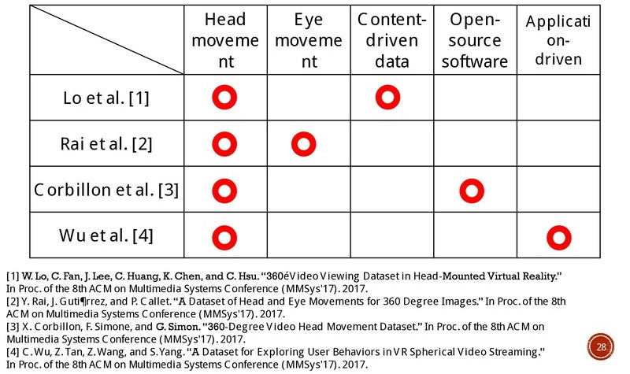

Frequently Asked Questions
Please, can you share with me the link to download the 360° Video Viewing Dataset (MMSys’17 paper)?
The dataset is available online at here.
In your dataset, do you give the subjects enough space to turn around?
In our experiments, all subjects are told to stand and given enough space to turn around when using HMD.
What is the shape of Field-of-View (FoV) you measured in the dataset paper?
We mentioned that the HMD (Oculus Rift DK2) displays the current FoV, which is a fixed-size region, say 100x100 circle.
How do you generate the tiles, such as 192x192, 240x240 ,and 320x320?
For all 360 videos, we divide each frame using H.264/AVC, which is mapped in equirectangular model, into 192x192 tiles, so there are 200 tiles in total. Then we number the tiles from upper-left to lower-right.
It is unclear why saliency map and motion map should be part of dataset itself. Can they be used to guarantee accurate timing between the dataset and origin data?
The image saliency map that identifies the objects attracting the viewers’ attention the most and the motion map that high-lights the moving objects. We use both content and sensor data in our proposed fixation prediction network, a tile-based 360° video streaming server.
Saliency maps are computed based on equirectangular images using a classical image-based saliency mapping approach, there is no research that indicates this can be done. For CubeMap images it might not achieve same results using same saliency mapping software.
There is no research that indicates the performance of the pre-trained CNNs using saliency map based on different projection models, such as equirectangular, cube and rhombic dodecahedron. A improved projection mechanism can be designed to mitigate the shape distortion caused by current projection models of 360° videos. It can make current saliency detection techniques more applicable for 360° videos.
How many public 360° videos datasets in the literature and what special features they have?
To our best knowledge, there are 4 360° videos datasets have been published in ACM Multimedia Systems 2107 (MMSys'17). Here is the overview of each dataset, each of them contains different features.

We need your helps and participate to improve our systems and algorithms. Please do not hesitate to contact us by sending an email. We will respond as fast as we can. Thank you. :)